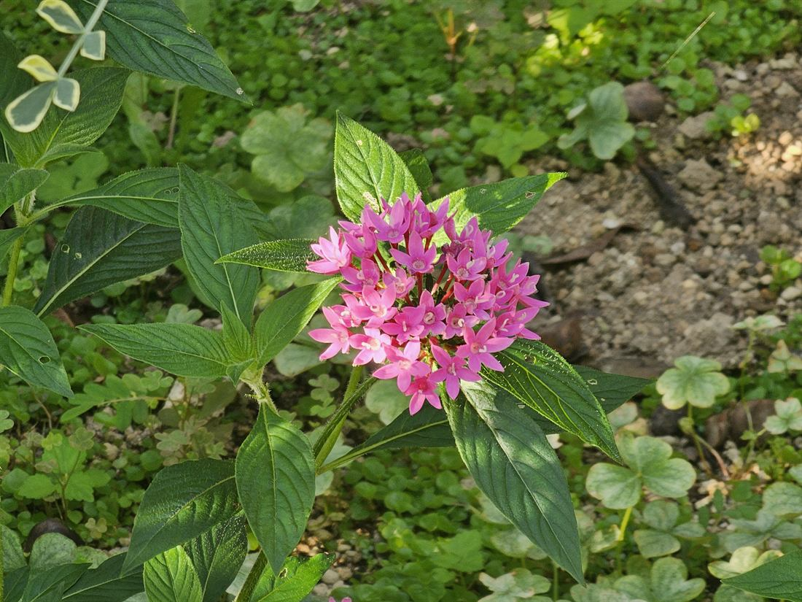
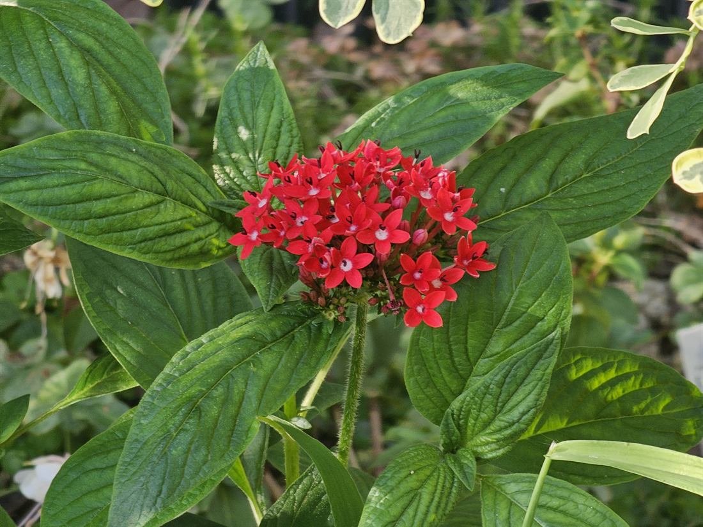

ペンタス（クササンタンカ）
Pentas lanceolata (Forssk.) Deflers
英名 · Egyptian star cluster（エジプトの星の房）／Pentas ＝ ギリシャ語で「5」
アカネ科 · Rubiaceae ── 026 ヘクソカズラと同じ科
燻太さんのプレゼント「近くに色の違う株があったから、2枚とも」……その2枚、色だけの違いじゃないかもしれない。
名前が、そのまま花の形
- Pentas（ペンタス）＝ギリシャ語で「5」。花冠が5つに裂けて、星になる。写真のとおり。
- lanceolata＝「披針形（ランス形）の」。葉の形から。
- 和名 クササンタンカ（草山丹花）＝サンタンカ（Ixora、同じアカネ科の低木）に似た草、という意味。
⭐ アカネ科 ── この科の顔ぶれがすごい
- コーヒー（Coffea）
- クチナシ（Gardenia）── 図鑑の「探してみたい」リストの子
- アカネ（茜）（Rubia）── 科の名前の由来。根から「茜色」の赤い染料をとる
- キナノキ（Cinchona）── キニーネ（マラリアの薬）
- 026 ヘクソカズラも、この科。コーヒーと、ヘクソカズラと、この星の花が、親戚。
- → おまけは「アカネ（茜）」にした。科の名の由来であり、日本の色の名前になった植物。
⭐⭐ 「色ちがい」だと思った2枚が、もっと大きな違いを写しているかもしれない
- ペンタスは、異形花柱性（いけいかちゅうせい／heterostyly）で有名な植物。
- 同じ種なのに、株によって「花の中身の配置」が2タイプある。
長花柱花（pin）：めしべの柱頭が筒の口に出て、おしべの葯は筒の奥に隠れる。
短花柱花（thrum）：おしべの葯が筒の口に並び、柱頭は筒の奥に隠れる。 - なぜ？——自分の花粉で受精しないため。虫の体の「同じ位置」に花粉がつき、相手の花の「同じ高さ」の柱頭に届く。pin の花粉は thrum の柱頭へ、thrum の花粉は pin の柱頭へ。
体の作りだけで、自家受粉を避け、他家受粉を強制する仕掛け。 - ⭐これを解き明かしたのが、チャールズ・ダーウィン（サクラソウで、1862年）。彼は自分の生涯の研究のなかで「最も興味深い発見のひとつ」と書いている。そしてアカネ科は、異形花柱性の宝庫。コーヒーもそう。
写真から言えること（正直に）
- 赤い株（写真②）：白い喉から、黒っぽい二又の器官がはっきり突き出している。二又＝柱頭に見える。→ 長花柱花（pin）の可能性が高い。
- ピンクの株（写真①）：喉に淡い色の器官が見える。でも、葯なのか柱頭なのか、この解像度では断定できない。
- だから、言い切らない。
🔍 宿題
- 次にあの花壇に行ったら、両方の花の「喉」を覗いてくる。
- 二又（Y字）の柱頭が、口に出ている → 長花柱花（pin）
- 5本の葯が、口に並んでいる → 短花柱花（thrum）
- ⭐もし2株が別のタイプだったら——「色ちがい」だと思って撮った2枚が、じつは「花の性のタイプちがい」だったことになる。
そのときは、この2枚が、ダーウィンの発見をそのまま写した記録になる。